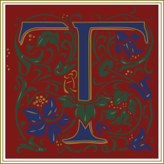
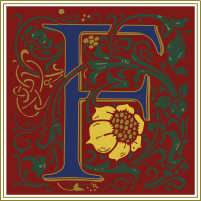

"The Lives” is a metadata-enriched and stylistically customizable magazine about only source about the lives of the most important artists of Florence: “The Lives of the most famous painters, sculptures and architects” of Giorgio Vasari, the eminent Renaissance historian. The project has been developed in the framework of the course “Information Modelling and Web Technologies”, held by Prof Vitali for the MA in “Digital Humanities and Digital Knowledge” in the a. y. 2022/2023.
The selection of these three artists, for the "The Lives" project was deliberate, as their artistic journeys were interwoven in a way that showcased reciprocal influence. Chronologically, Donatello holds the position of the earliest among them. His groundbreaking work not only defined his era but also left an indelible mark on the Florentine art scene. Donatello's innovative stylistic choices and his ability to infuse life into his sculptures set a precedent that would echo through the ages.
One of the most significant aspects of this influence can be traced to Donatello's impact on Andrea del Verrocchio. Verrocchio, a renowned artist in his own right, found himself under the artistic tutelage of Donatello. This association led to a profound stylistic evolution in Verrocchio's work. The legacy of Donatello's innovative techniques and artistic vision can be observed in Verrocchio's sculptures and paintings, showcasing the enduring power of artistic mentorship and inspiration. Perhaps the most illustrious testament to this artistic lineage is the fact that Andrea del Verrocchio went on to become the master of Leonardo da Vinci. This mentorship paved the way for Leonardo's unparalleled artistic genius to flourish. The rich blend of knowledge, techniques, and inspiration passed down from Donatello to Verrocchio, and subsequently to Leonardo, showcases how the art of Florence during the Renaissance was an evolving, collaborative endeavor. The culmination of these artistic influences in Leonardo da Vinci's work is a testament to the profound and lasting impact of these interconnected lives in the realm of art history.
The web application created for the project comprises a collection of HTML pages
that have been tailored using CSS stylesheets and brought to life through the
incorporation of JavaScript scripts. Within this digital realm, certain integral
elements, have been crafted using predefined templates sourced from Bootstrap
and other reputable origins. These templates, while rooted in established designs,
have undergone subtle refinements to align with our specific requirements and to
respect the distinctive stylistic characteristics of the historical era we seek to portray.
The "issue" pages of the three artists are where the text takes place. Metadata
is displayed using buttons designed to emphasize important individuals and locations, following the Text Encoding paradigm
Additionally, a search bar is integrated into the platform, enabling users to locate specific strings within the text. All instances of the searched string will be highlighted and quantified for easy navigation and reference. Besides the home and the text page, a map is also present in the site. This latter created with Leaflet, a leading open-source JavaScript library for interactive maps. It shows all the meaningful places mentioned in Vasari’s texts. Within the map, each marked location features a popup containing both the manner in which that place is referenced (for instance, there may be places mentioned multiple times in the text with varying descriptions) and a link to the specific texts in which it is mentioned. This design empowers users to seamlessly navigate the text through the search bar and explore all instances of the places they are interested in learning more about.
Firmly rooted in the essence of Renaissance style manuscripts, my design draws inspiration from the Italian >humanist, historian, and poet Pandolfo Collenuccio. The meticulous designs and representations, exemplified by images sourced from Europeana—a renowned digital platform offering access to an expansive collection from European cultural institutions—showcase pages from Collenuccio's seminal works: the Apologues (Agenoria, Misopenes, Alithia, and Bombarda) and Lucian's Dialogues (De raptu Europae, Galene et Panope, and De Paradis iudicio). All these works were penned in eloquent Latin between c. 1509 and c. 1517. Significantly, the notable contributor to these intricate designs was Ludovico degli Arrighi. Renowned for his Renaissance calligraphic style, Arrighi's influence adds another layer of richness and authenticity to the manuscript's heritage.
Typography plays a pivotal role in transporting the reader back in time.Two distinct fonts,Tangerine and Cinzel, are masterfully employed, chosen for their resemblance to the fonts of the original texts. Cinzel, with its classic elegance, graces titles, image descriptions, the navbar, the metadata button, and the primary title. For article text, I adopted "Tangerine," reminiscent of the cursive writing in the manuscript. As for the initial letters of each article, which in manuscripts are typically ornate, I employed "Goudy Initialen" to encapsulate that floral and decorative essence.
Every textual element has been curated. Each text is justified, mirroring the common style of the time, and features a pronounced right margin. Articles commence with a decorative side bar on the left, reflecting pure Renaissance aesthetics. When addressing images, I opted for a distinct approach. Given that manuscripts from this period lacked photographs, with only drawings or paintings as representations, I applied a subtle "painting" effect to all images. Additionally, I surrounded each image with a frame directly inspired by the decorative borders present in the manuscript photographs. The figcaption draws inspiration from sections of the manuscript text where golden words are set against a blue backdrop with black and gold borders. This style, albeit with a bordeaux background, was also employed for the metadata button, which highlights place names and person names. Article titles, too, echo this, presenting with a double gold border against a bordeaux backdrop.
A different approach was taken for the images of the three artists. Inspired by the sole representation in the manuscript
illustrations – that of Pandolfo himself – I embellished the photos with a leaf border, seamlessly connecting them to the
initial letter of each article crafted using "Goudy."
For the map, I kept it straightforward, applying a sepia effect to evoke an antique appearance.
Discover
the inspirational
moodboard on Pinterest:
The second chosen typographic style for the website, is rooted in the late 19th-century Art Nouveau movement. This design inspiration draws heavily from the renowned Italian magazine, Emporium,which was printed in Bergamo by the Institute of Graphic Arts. Emporium, founded in 1895, remained in publication until 1964, leaving an indelible mark on the Italian art scene. The Magazine belonged to the category of illustrated publications and initially took cues from the English magazine "The Studio: An Illustrated Magazine of Fine and Applied Art," which made its debut in London in 1893. As time progressed, Emporium continued to draw inspiration from similar publications, notably the German magazines such as "Pan" (established in Berlin in 1895) and Jugend – Münchner illustrierte Wochenschrift für Kunst und Leben" (first published in Munich in 1896). One distinctive feature of Emporium was its ever-evolving cover designs, which changed from month to month, reflecting the prevailing styles and tastes of the era. Initially, the covers of the first year's issues were created by Gabriele Chiattone, the head of the Bergamasque Institute's drawing room. These covers often drew inspiration from sources like the Century Magazine, published in New York and London. Over time, advancements in printing techniques and paper substrates allowed for the incorporation of increasingly vibrant colors. For the purposes of this examination, the focus will be on the 1987 edition of Emporium magazine, with particular emphasis on the cover designs from June to December.These last insipired the making of the chosen coulor palette.
The chosen typographic and layout style for my HTML website project draws inspiration from the advertising section of Emporium magazine. This particular source of inspiration encompasses various elements, including ornate frames, decorative motifs, and unconventional layouts featuring decorative flowers or stars. These carachteristic are also present in typefaces, Art Nouveau fonts are renowned for their elegance and use of flowing, organic lines. Letters are adorned with ornaments and curved strokes, making them ideal for titles and headers. Additionally, inspiration has been drawn from the body of the magazine itself, especially the text formatting.
In this regard, the text follows a style characterized by larger initial letters ornately adorned with floral elements, double-column layouts, and the inclusion of decorative paragraph breaks. This approach seeks to capture the aesthetic essence of the late 19th-century Art Nouveau movement, mirroring the stylistic elements found within the Emporium magazine's advertising and textual content. Here the inspirational board:
The third style is Futurism. I drew inspiration from the central ideas
of this movement: dynamism, revolution, and chaos. Specifically, my inspiration was derived from the painter, sculptor,
designer, and illustrator Fortunato Depero, as well as Marinetti himself. I considered some of Depero's works, with a
particular focus on the graphics and typography of his renowned "Bolted Book."
Regarding fonts, I selected Square font for the navbar, the metadata button, and the title on the homepage. This choice is reminiscent of the blocky
lettering on Depero's book title, further emphasized by the background image on the homepage, which pays homage to Depero's book cover.
For the main text, I opted for the Sitka font, mirroring the book's typography.
The actual title of the page, however, is set in Roboto. I was drawn to the idea of using different fonts to introduce movement and energy
to the design. Roboto, with its geometric clarity and straightforward structure, serves as a fitting choice for this purpose.
Its linear and mechanical attributes resonate well with the Futurist movement's emphasis on speed, mechanization, and urban dynamism.
I focused on its effects. The first part of the title features letters positioned differently from one another, creating a sense of
randomness and dynamism. This is achieved using CSS transformations, giving each letter its unique position and orientation.n.
The second part of the title takes a different approach, emphasizing the typographical style of Futurism with shadows that add depth and movement. The overlapping technique,
combined with the shadow effects, creates a sense of depth and motion characteristic of Futurist typographic style.
For the article layouts, I was once again influenced by the "Bolted Book." I partitioned the text into paragraphs of
varying sizes, each oriented differently, and adorned with uniquely dimensioned borders. These borders differ in
their placement, sometimes framing the top and bottom, other times the left and right, all presented elegantly.
I've also played with the size and thickness of words, a typical Futuristic trait. As a result, the text exudes an essence of chaos
and non-linearity.Regarding the images, staying true to the "Bolted Book," I opted for their black and white versions.
I sought to accentuate these characteristics even more in the articles' titles, drawing inspiration from Depero's design for the 1928 Strega liqueur.
From this and other Futurist works, I embraced the idea of crafting an irregular shape for the title, basing it on a zig-zag pattern and
incorporating various colors. To echo a quintessential Futurist feature, I incorporated the "mix-blend-mode" property into the title texts,
alluding to the Futurist hallmark of overlapping and merging shapes and images.
Examining the color palette, black is undoubtedly the dominant shade. Black played a significant role in Futurism, especially during its early years. It symbolizes modernity, energy, and dynamism and is essential for creating contrast with other colors, emphasizing shapes. I've chosen a purely black background adorned with white lines radiating from a central point, producing a perspective and depth effect. This design invokes motion, three-dimensionality, and dynamism—core elements of Futurism. The remainder of the palette leans towards the Futurist inclination to use vibrant colors as a response to industrialization, breaking from the past and opposing naturalism. This sentiment is evident in Depero's works, such as his design for Strega liqueur, from which I derived the purple, red and green shades, while the orange is borrowed both from there and the "Bolted Book." The background colors for the texts and the navbar were inspired by the standard text hues in Depero's book.
Throughout the page, I've experimented with dimensions and rotations—creating a non-linear title and utilizing shadows for the subtitle.
To echo a quintessential Futurist feature, I incorporated the "mix-blend-mode" property into articles' titles, alluding to the Futurist
hallmark of overlapping and merging shapes and images.
Another noteworthy aspect is the presence of various animations: the title's letter movements, color-changing letters in the navbar upon hover,
background animations
for the metadata button, and the recurring "click" word across the page. The latter aims to evoke the Futurist's frequent use of onomatopoeias,
intended to break tradition and depict modern reality, as seen in Marinetti's "Zang Tumb Tumb." The choice of the word "click" serves a dual
purpose: it's relevant in the web context and symbolizes modernity, reminiscent of computer interactions.
Discover
the inspirational
moodboard on Pinterest:
The fourth selected typographic style for the website project takes inspiration from the Postmodernism movement, with a particular focus on the work of April Greiman. Trailblazing artist born in New York in the 1940s, renowned for her groundbreaking approach to design that seamlessly integrated digital technology into her creative process, Greiman stands as a prominent figure at the intersection of the rationality of European modernism and the disruptive spirit of the Californian new wave. Her influence is reflected in the design elements of the website: the use of contrasting geometric shapes, disruptive colors, and dynamic text.
Additionally, a semi-transparent background frames a three-column layout, where alignment shifts seemingly without rhyme or reason. Various words are differentiated by color, font, and letter-spacing, adding to the overall sense of dynamism and unpredictability. The layout draws upon Postmodern principles, often characterized by a playful juxtaposition of typefaces, colors, and imagery. It embraces a sense of eclecticism and rejects the strict rules of traditional design, much like the Postmodernist movement itself. The website's typography showcases a dynamic and unconventional use of fonts. Different typefaces may be combined creatively to convey messages and evoke emotions, mirroring the willingness to push the boundaries of traditional typographic norms.
Furthermore, the website's layout experiments with non-linear and asymmetrical compositions, echoing Greiman's emphasis on
breaking away from the traditional grid structure. This allows for a more dynamic and engaging user experience, as visitors
encounter unexpected visual elements and arrangements. In summary, the typographic and layout style of the website project
is strongly influenced by April Greiman's Postmodernist approach, embracing eclecticism, unconventional typography,
and innovative layouts to create a visually stimulating and unique online experience. Here's a link to an inspirational
board featuring April Greiman's work:
The overarching design philosophy for this project is deeply inspired by the late 20th-century, a period marked by transformative shifts in both fashion and technology. The era featured a unique blend of minimalistic yet bold designs, juxtaposed with a retro-futuristic vision. This project captures the essence of this time, largely drawing from the color schemes, typography, and design elements characteristic of that period.
The primary font chosen for section headings is 'Silkscreen-Regular', a font that exudes a sense of nostalgia for late 20th-century tech and design. It brings forth memories of pixelated screens and early web design. The text is bold with a generous letter-spacing of 12px, offering readability while providing a distinct retro feeling. A subtle text shadow adds depth and a three-dimensional appearance to the text, a design element often seen in this period.
The project predominantly features a retro-inspired color palette with hues like #FFDDAA, #FF55AA, and #FFAABB. These colors are not just reminiscent of the late 20th-century but also offer excellent contrast and readability. The gradient backgrounds and double borders work together to imbue the design with a sense of depth and dimensionality.
The layout is designed with a generous margin and padding. This choice not only ensures readability and a clean design but also emulates the spacious and uncluttered designs of the late 20th-century. The project also features flexbox for centering elements, aligning perfectly with the late 20th-century's straightforward yet effective design techniques.
Buttons have been given special attention in this design. Their retro look is achieved through gradient backgrounds, bold borders, and box shadows. The hover effect reverses the gradient and provides a 'pressed' look, adding dynamism to the interaction.
The Accordion button is not just functionally important but also aesthetically pleasing. It sports a linear gradient background and a solid retro border. It also has a box shadow that adds depth to the button. On hovering over the button, additional text appears in a semi-transparent background. This is a nod to the interactive features that started to become popular in late 20th-century web design. The design is responsive, with different max-width set for various breakpoints. This ensures that the retro design is accessible across all devices.
The aim of this design project is to envision what the future holds for web development and design. The focus is on the year 2030, a time we imagine will be characterized by a blend of simplicity, modernism, and new technological capabilities. Our design choices are inspired by these futuristic ideals, utilizing gradients, soft shadows, and custom properties for flexibility and scalability.
The typeface chosen for this design is "Raleway," a clean, modern sans-serif typeface that complements the futuristic aesthetic. The text is transformed to uppercase to bring attention to headings and create a sense of uniformity. We've used various font-weights to add depth and focus to different parts of the text, making sure it is both visually captivating and easy to read.
The primary color palette comprises a deep purple (#6200EE) and teal (#03DAC6). These colors not only offer a vibrant contrast but are also associated with technology and innovation. The text color is kept white (#FFFFFF) to ensure readability and to contrast against the dark backgrounds.
The layout remains clean and straightforward, with generous top and bottom margins to ensure that each section is well-defined and easy to read. The modern feel is emphasized through the use of gradients and soft drop shadows, elements that are expected to become more prevalent in the future.
The gradient background is dynamic, changing upon hover to give a sense of interactivity. Soft shadows add depth, while a subtle upward motion on hover provides a 'floating' effect, making the interaction feel more lifelike and engaging.
The main navigation features a dark background with a subtle border for separation, aligning well with the modern, futuristic feel. The font weight is medium to maintain a clean look, and a smooth transition effect is added for hover states, providing an elegant user experience.
The accordion elements are styled with a dark background to maintain the overall modern look. Rounded borders, another modern design staple, are added to create a softer, more approachable feel. The color changes subtly when the accordion is active or hovered over, enhancing user interaction and making it more intuitive.
This website serves as a platform to delve into diverse typographic and layout styles for textual content. It is the culmination of a project for the "Information Modeling and Web Technologies" course, part of the Master's Degree in Digital Humanities and Digital Knowledge at the University of Bologna, guided by Prof. Fabio Vitali.
The content featured on this website is curated based on the detailed and extensive nature of the documents from:
Project Gutenberg.
Copyright and related rights on the content remain with their original owners. All Copyrights on the typographic and layout choices are 2023 © The Lives. The project was carried out by Maria Chiara Giorgi, Eliza Stuglik and Ali Ghasempouri.